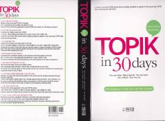

TIKoreys tili TOPIK imtihonining o'rta darajasi uchun 30 kunlik so'z boyligi qo'llanmasi.
Ushbu qo'llanma TOPIK imtihonining o'rta darajasi uchun 2200 dan ortiq eng muhim so'zlarni o'z ichiga oladi. Materiallar chastota tartibida tuzilgan bo'lib, kundalik va haftalik takrorlash mashqlari hamda sinonim va antonimlar bilan boyitilgan. Kitob koreys tilini o'rganuvchilar va imtihonga tayyorgarlik ko'rayotganlar uchun mo'ljallangan.